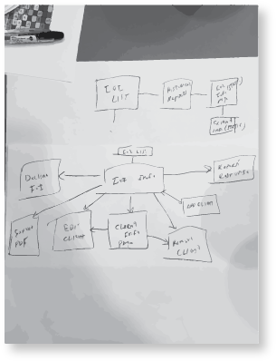
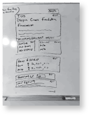
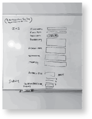
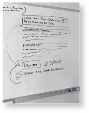
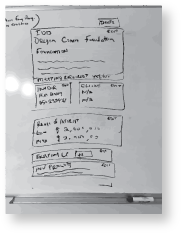
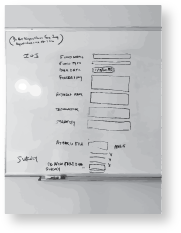
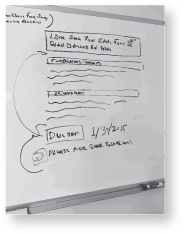
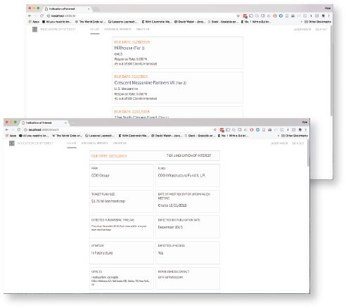

Problem
The project prior to getting our hands on it, had failed 3 times already with solutions that did not meet the needs. This was the last attempt to bring something of value to our users. The previous implementations tried utilizing existing technologies to bring together a solution (i.e. outlook, SharePoint) but failed by not taking into account how the Investment Analyst and Directors worked and did not identify what was most important to them in this process.
Currently, the Analyst and Directors manually curated and managed everything through email. Using email for this process is tiresome and extremely prone to error. Emails get lost in the inbox thread and clients are not shown opportunities because an Analyst or Director forgot about an email that was lost in the slew of other messages.
This is not helping the firm at all and is potentially losing the firm and clients millions of dollars. This process has to be managed in a better way. We were only given a few weeks to complete this project by.
Process
We employed a Rapid Prototyping approach to design this application. The time frame we had to produce results was short so rapid prototyping allowed us to move quickly. We designed a simple prototype first and then iteratively improved and added or removed features as needed based on feedback.
User Advisory Group
We assembled a user advisory group for this project. Feedback needed to be fast so we wanted to have users we could reach out to and get an immediate response from. The user advisory group consisted of...
- 1 Senior Investment Director
- 3 Investment Directors
- 2 Investment Analysts
What is an IOI?
The Indication of Interest is actually a method of communication and is mostly represented by a form and sometimes represented in an excel sheet. An IOI is a signifier by a Fund Manager to identify potential interested Investors for a newly created fund. What this does, is it allows Fund Managers to gather information and promises or IOUs from potential investors or clients that they will invest X amount of dollars into the fund.
Diving into IOIs
The first step we took was to understand what IOIs look like and how they are managed in the organization. The IOI process is almost completely handled through email and sending along a spreadsheet with relevant information. The rest of it is managed with bulletin like pages on a SharePoint site.
Initially, we conducted a discover phase and scoured the organization for artifacts of previous IOIs. We stumbled upon previous emails and SharePoint pages with information containing IOIs. This took a lot of time since we had no help or idea where to find these items but were able to pull together…
-
~20 examples of IOIs
-
~50 emails of IOI transactions
Success Metric
After analyzing all research from the discovery phase, we decided along with the stakeholders that the best success metric was Time to Answer.
Time to Answer is a metric determined by how long it takes to receive an answer from a client on an IOI. The time frame starts when the client is sent the IOI and is completed when the client makes a decision. We aimed to reduce the Time to Answer from the previous process.
Based on data gathered from previous emails, Time to Answer was ~ 3 weeks on average.
Information Architecture
After looking through these documents we started to get a good idea of what the process was and the pain points within this process. The next step was to figure out how to organize all the information. From our discovery phase we had found all the necessary data that would be needed within an IOI. To organize the information we chose to do a Card Sorting activity and came up with groups of data.

Site Map
With our data grouped in a way that made the most sense, we took our groups along with the information found in the discovery phase and determined what the structure of the application should be. We created a Site Map to organize the content and pages.
Wireframes
After putting together the Site Map, the next step was to start designing the wireframes. We started by white boarding together and came up with a few different solutions. After evaluating the solutions we settled on one.
We decided to go with a card based approach. There was a lot of information for a user to take in, so a card based approach would segment the information into digestible chunks.
 





Mockups & Specs
After getting the wireframes to a point where we felt confident that we covered all scenarios, we designed high fidelity mockups with specs. Our approach was to create mockups of a few pages which covered all patterns and components as to not duplicate efforts. Then we would design the other pages as we progressed through the project.
Prototype
Once the mockups and specs were completed we started working on the prototype. The prototype was developed using HTML, CSS, SASS, Javascript, Angular, and Gulp.
User Testing

After developing the initial prototype, we reached out to the User Advisory Group to get feedback on our prototype. The user testing sessions mostly were in a focus group format. We would reach out to the group and whoever would show up was who we used to test our prototype. Sometimes there would be only one participant in which we would just treat it as a regular user test.
Rapid Prototyping
After conducting the first focus group session, we took the feedback and adjusted our design and then presented the new design to the User Advisory Group. We continued to move in this process until we had come to a point where we were satsified with the final product and the users were also content with what we have designed. During the subsequent iterations we mostly went from wireframing straight to updating the prototype. We wanted to move fast and have mininmal lag between iterations.
Conclusion
This was a tough project without any guidance but eventually it all came together. With the short deadline we were able to create something that gave the users exactly what they needed.
This solution is much better than the current one and has reduced errors and streamlined communication between all parties involved in the IOI process. Saving the company lost money from missed opportunities and saving employee time from being wasted with unnecessary back and forth emails.
Currently, the application is in use by Investment Analyst and Directors at Cambridge Associates as of Early 2017. We were able to reduce the Time to Answer to ~ 2.2 weeks on average.